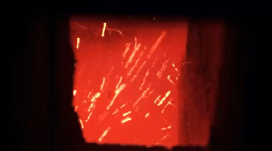

1) Size of fuel particles.
2) Density of air fuel mixture.
Hence, these parameters are given due consideration, while manipulating with air flow velocity for desired rate of combustion.
In fluidized bed combustion, rapid mixing ensures uniformity of temperature. The main advantage of fluidized bed combustion system is that municipal waste, sewage plant sludge, biomass, agricultural waste and other high moisture fuels can be used for heat generation .
A fluidized furnace has an enclosed space with a base having openings to admit air. Crushed coal, ash and crushed dolomite or limestone is mixed in the bed furnace and high velocity combustion air is then passed through the bed, entering from the furnace bottom. With the steady increase in the velocity of air, a stage will be reached when the pressure drop across the bed becomes equal to the weight per unit cross-section of the bed, and this particular critical velocity is called the minimum fluidizing velocity. With further increase in velocity of air, the bed will begin to expand and allow passage of additional air, in the form of bubbles. When the air velocity becomes 3 to 5 times the critical velocity, the bed resembles to that of a violently boiling liquid. A pictorial representation of fluidized bed combustion is given in the figure below :-

The evaporator tubes of boiler are directly immersed in the fluidized bed and the tubes, being in direct contact with the burning coal particles, produce very high heat transfer rates. Because of this, the unit size is reduced to a great extent, and also produces combustion with very high efficiency.
Types of Fluidized Bed Combustion (FBC)
1) Vertical type FBC :These are generally used in smaller plant, and has the capacity to produce steam of up to 6 tonnes per hour only. Their vertical shape reduces the overall dimension of the steam boiler, and is extremely efficient in plants, where space provision is limited.
2) Horizontal type FBC : There are almost 10 times in capacity when compared to vertical type fluidized bed combustion. They can produce as much as 60 tonnes of steam per hour, and are placed horizontally with respect to the boiler tubes. The high capacity of the horizontal type Fluidized boilers coupled with their high efficiency, makes them an extremely desirable choice for the coal fired thermal power generating station .
Advantages and Dis-advantages of Fluidized Bed Combustion
FBC is being used exhaustively these days in all major power stations all over the globe, owing to numerous advantages that it offers over the other pre-dominant methods of combustion. Few of those are :-
1) High thermal efficiency.
2) Easy ash removal system, to be transferred for made cement .
3) Short commissioning and erection period.
4) Fully automated and thus ensures safe operation, even at extreme temperatures.
5) Efficient operation at temperatures down to 150° C ( i.e. well below the ash fusion temperature).
6) Reduced coal crushing etc.(pulverised coal is not a necessity here).
7) The system can respond rapidly to changes in load demand, due to quick establishment of thermal equilibrium between air and fuel particles in the bed.
8) The operation of fluidized bed furnace at lower temperature helps in reducing air pollution. The low temperature operation also reduces the formation of nitrogen oxides. By adding either dolomite (a calcium-magnesium carbonate) or lime stone (calcium carbonate) to the furnace the discharge of sulphur oxides to the atmosphere can also be reduced if desired.
In view of all these advantages of fluidized bed combustion above, where fluidized bed combustion emerges as the best alternative available today, still the major drawback of this system is that the fan power has to be maintained at a considerably highvalue, since the air has to be supplied continuously at a very high pressure for supporting the bed. This in turn increases the operating cost of the auxiliary units of the plant. But it is more than compensated by the high values of efficiency that FBC provides.
 by
by